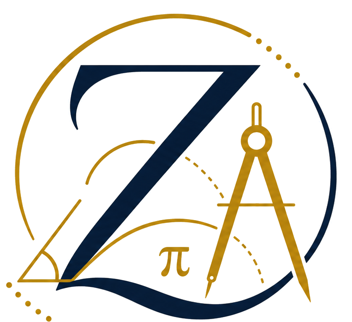

Temel Taşları
9. Sınıf Konularına Git →
9. Sınıf: Lisenin Dili
Mantık, Kümeler, Denklem ve Eşitsizlikler, Üçgenler ve Fonksiyonlara giriş. Lise matematiğinin soyut altyapısının kurulduğu kritik yıl.

ZarifÇözüm9, 10, 11 ve 12. sınıf matematik müfredatı ve YKS (TYT-AYT) maratonunda rastgele değil, stratejik ilerleyin. Seviyenizi, hedefinizi ve günlük çalışma sürenizi belirleyin; size özel haftalık çalışma planı ve eksik kapatma rotasını anında oluşturun.
Hedef netini ve haftalık soru kotanı belirle; yapay zekâ destekli haftalık takvimini oluştur.
Hemen Planla ↓Seçimlerinizi yapın; seviyenize ve hedefinize uygun haftalık çalışma çizelgesi ve konu kontrol listesi dinamik olarak üretilsin.
Her kademenin sınav stratejisi ve konu matematiği farklıdır. Seviyeni keşfet.
Mantık, Kümeler, Denklem ve Eşitsizlikler, Üçgenler ve Fonksiyonlara giriş. Lise matematiğinin soyut altyapısının kurulduğu kritik yıl.
Sayma ve Olasılık, Polinomlar, İkinci Dereceden Denklemler, Dörtgenler ve Çokgenler. TYT'nin en çok eleyen sorularının kaynağı.
Trigonometri, Analitik Geometri, Fonksiyon Uygulamaları, Çember-Daire ve Olasılık. AYT puanının %40'ından fazlasını inşa eden kademe.
Diziler, Trigonometrik Denklemler, Türev, İntegral ve karma branş denemeleri. Zaman yönetimi ve net sabitleme teknikleri.
Unutma eğrisini kıran yapay zekâ destekli eksik tamamlama döngümüz nasıl çalışır?
Çözdüğünüz testlerde yanlış veya boş bıraktığınız kazanım anında haritalanır.
3 gün sonra yapay zekâ aynı kazanımın benzerini ipucu destekli olarak sunar.
Haftalık branş denemenizde o konunun benzer soru kalıbı tekrar karşınıza çıkar.
Bilgi artık uzun süreli hafızaya kaydedilmiş ve net artışına dönüşmüştür.